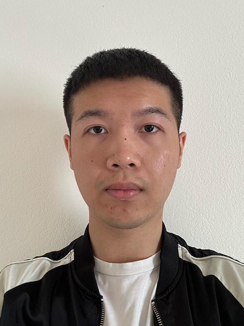

my name is hongliang dong
My career goal is to become a graphic designer in the future, that is also the reason why I am pursuing a bachelor's degree in visual communication design in SFSU. This is my second semester here after transferring from CCSF. I have been taking design classes there too and got my design foundation certificate. By learning the basics of design, it allows me to see more creativity about things that are around us in daily life. I am interested in the field of graphic design mainly in the way that things can be created in different approaches and not limited with solutions. I am more towards print projects like poster design, and branding. Some of the strengths as a designer for me will be layout, the placement of things within grid and alignment. Listening is also one of the strengths and patience. Some of the weaknesses as a designer for me will be the use of color and presenting work as explaining in front of a group about the process and final solution.